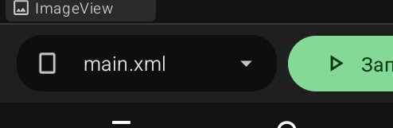

HelpStudio — приложение для создания и публикации справок прямо на телефоне. Пользователь создаёт проекты, разбивает их на разделы, пишет HTML-код страниц, смотрит предпросмотр.
Это финальный проект курса. В нём собирается всё: разметка экранов, списки ListView, хранение данных, переходы через Intent, всплывающие окна Dialog, WebView для отображения HTML, темы и MaterialButton.
За шесть проектов мы прошли путь от «Hello, World!» до приложений с сохранением данных. Каждый проект добавлял новую технологию. Теперь пришло время собрать всё вместе.
HelpStudio — это не учебная пустышка. Это приложение, которым можно пользоваться: писать справки для своих проектов, хранить их, редактировать HTML на телефоне, смотреть предпросмотр.
Что важно в этом проекте:
Экран (по-английски Activity, «Активность») — это отдельная страница приложения. Как страница в книге. Пользователь видит один экран, потом нажимает кнопку — и открывается другой экран.
В HelpStudio четыре экрана:
Каждый экран — это отдельная самостоятельная единица. У каждого экрана:
Экраны не вкладываются друг в друга. Нельзя «положить» экран редактора внутрь главного экрана. Они существуют параллельно. Переход между ними — программный, через компонент Намерение / (Intent).
Каждый экран в Sketchware Pro 7 начинается с корневого контейнера — LinearLayout с ориентацией vertical. Это невидимая рамка, которая держит все остальные виджеты и располагает их сверху вниз.
По умолчанию этот контейнер имеет имя rootLayout. Это имя можно поменять, но обычно его оставляют как есть — как «стандартное обозначение корня».
У каждого экрана свой rootLayout. В главном экране — свой, в редакторе — свой, в предпросмотре — свой.
Когда ты открываешь Дизайнер и видишь, что макет уже содержит какой-то контейнер — это и есть rootLayout текущего экрана. В него ты и перетаскиваешь виджеты.
Приложение HelpStudio должно уметь:
Открой Sketchware Pro 7. Ты увидишь главный экран со списком проектов.
Шаг 1. Нажми кнопку «+» в правом нижнем углу главного экрана. Откроется экран «Новый проект».
Этот экран состоит из восьми элементов. Разберём их по порядку сверху вниз.
Сверху по центру — круглая кнопка с иконкой. По умолчанию стоит стандартный зелёный робот Android. Под кнопкой подпись: «Нажмите, чтобы создать новую иконку».
Что это: иконка, под которой приложение появится на рабочем столе устройства. Тап по круглой кнопке открывает редактор иконки. Там можно задать фон (цвет или градиент), форму (квадрат или круг), картинку, текст и значок.
Для первого запуска иконку можно оставить как есть — потом поменяешь.
Первое текстовое поле формы. Слева иконка робота Android. Внутри — серая подсказка «Введите имя приложения».
Что писать: название, которое увидит пользователь. Оно появится под иконкой на рабочем столе, в списке приложений, в настройках Android.
Что можно: кириллицу, латиницу, цифры, пробелы. Длина — до 40–50 символов.
Для HelpStudio введи: HelpStudio.
Второе текстовое поле. Слева иконка куба. Сверху над рамкой надпись-метка: «Имя пакета». По умолчанию Sketchware подставляет com.my.newproject2.
Что это: уникальный технический идентификатор приложения в системе Android и в Google Play.
Формат: три части через точку — com.автор.название. Всегда латиницей, строчными буквами, без пробелов, дефисов, кириллицы.
Для HelpStudio введи: com.rasnikgal.helpstudio.
Третье текстовое поле. Слева иконка из трёх фигур (квадрат, круг, треугольник). Сверху над рамкой метка: «Имя проекта». По умолчанию Sketchware подставляет NewProject2.
Что это: внутреннее имя проекта в Sketchware Pro 7. Его видишь только ты в списке проектов. Пользователь его не увидит.
Что писать: коротко, по-английски, без пробелов.
Для HelpStudio введи: HelpStudio.
Под тремя полями — горизонтальный ряд из четырёх цветных кружков и значка «?» справа.
Подписи под кружками:
Тап по любому кружку открывает экран «Выберите цвет»: вводишь HEX-код вручную или выбираешь из предустановленных оттенков Material Design.
Значок «?» справа открывает справочную схему, где стрелками показано, какой цвет за что отвечает.
Для первого запуска можно оставить как есть — цвета поменяешь позже.
Блок под палитрой. Слева иконка палитры и заголовок «Пресеты тем». По центру — кнопка «Сгенерировать случайную». Справа — круглая кнопка с иконкой обновления.
Под заголовком подсказка: «Выберите из предопределённых тем или сгенерируйте случайную».
Ниже — лента из плиток-пресетов. Каждая плитка — прямоугольник, разделённый на вертикальные полосы. Полосы показывают цвета темы. Под плиткой — название:
Тап по плитке применяет цвета пресета ко всей палитре выше. Кнопка «Сгенерировать случайную» подбирает новый набор цветов автоматически.
Для первого запуска выбери любой — например, Material Blue.
Под пресетами — блок с двумя полями, разделёнными иконкой-связкой между ними.
Код версии — слева. По умолчанию стоит 1.
Что это: целое положительное число, которое однозначно идентифицирует сборку приложения. Видят только система Android и Google Play. Пользователь его нигде не видит.
Правило: каждая новая сборка, загруженная в Google Play, должна иметь код версии строго больше предыдущего. Для первого релиза — 1. Следующий — 2, потом 3, и так далее.
Что писать: только целые положительные числа. Без точек, запятых, букв, минусов.
Для HelpStudio оставь: 1.
Имя версии — справа. По умолчанию стоит 1.0.
Что это: строка, которую видит пользователь. Появляется на странице приложения в Google Play, в настройках Android (раздел «О приложении»).
Что писать: формат major.minor.patch — цифры и точки. Например, 1.0, 1.0.0, 2.3.1. Длина — до 10–15 символов.
Для HelpStudio оставь: 1.0.
В самом низу формы две кнопки.
«Отмена» — слева, тёмно-зелёная. Закрывает экран без создания проекта. Все введённые данные теряются.
«Создать» — справа, ярко-зелёная, акцентная. Создаёт проект и открывает рабочий экран.
Кнопка «Создать» активна, только если заполнены обязательные поля: имя приложения, имя пакета, имя проекта, код версии, имя версии.
Шаг 2. После заполнения всех полей нажми «Создать».
Sketchware Pro 7 выполняет несколько шагов:
AndroidManifest.xml, MainActivity.java, main.xml, strings.xml, colors.xml, styles.xml.colors.xml.main.xml.Что ты видишь на рабочем экране:
main.xml с уже добавленной Панелью инструментов (зелёная шапка сверху).При создании проекта Sketchware автоматически создаёт первый экран — main. Это MainActivity.
Но нам нужно четыре экрана. Три дополнительных надо создать вручную через Менеджер представлений.
Менеджер представлений — это раздел Sketchware Pro 7, где управляются экраны проекта. Открывается через меню ⋮ в правом верхнем углу рабочего экрана проекта.
Шаг 1. Открой рабочий экран проекта (любую из трёх вкладок).
Шаг 2. Тапни по кнопке ⋮ (три точки вертикально) в правом верхнем углу.
Шаг 3. Откроется меню «Настройка» — список разделов. Найди в нём пункт «Менеджер представлений» и тапни по нему.
Шаг 4. Откроется окно «Менеджер представлений» с двумя вкладками сверху:
На вкладке View ты увидишь карточку с одним экраном — main.xml (первый экран). Под названием мелким шрифтом написано MainActivity.java — это имя файла логики этого экрана.
В правом нижнем углу окна — круглая зелёная кнопка «+». Именно через неё создаются новые экраны.
Шаг 1. В окне Менеджера представлений нажми круглую кнопку «+» в правом нижнем углу.
Шаг 2. Откроется форма «Создать новый». Заполни её так:
editor (для второго экрана).Шаг 3. Нажми «Сохранить». Экран editor появится в списке Менеджера представлений.
Шаг 4. Повтори шаги 1–3 ещё два раза, создав экраны:
preview — для предпросмотра.settings — для настроек.Итого у тебя четыре экрана:
| Имя файла | Название | Назначение | Как создаётся |
|---|---|---|---|
| main | MainActivity | Главный экран | Автоматически |
| editor | EditorActivity | Редактор | Вручную через «+» |
| preview | PreviewActivity | Предпросмотр | Вручную через «+» |
| settings | SettingsActivity | Настройки | Вручную через «+» |
После создания всех четырёх экранов ты можешь переключаться между ними двумя способами:
Когда ты переключаешься на другой экран, весь Дизайнер обновляется: показывает разметку именно этого экрана.

main.xml или editor.xml.
Sketchware Pro 7 · Автор: RasNikGal · © 2026